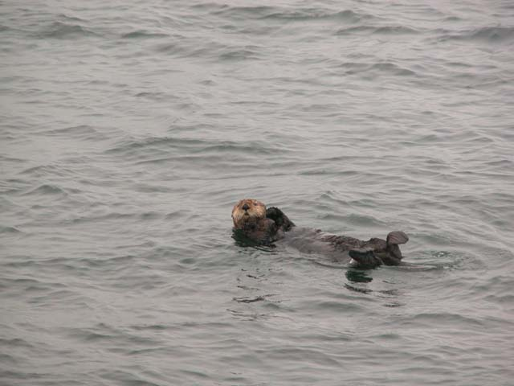

I've now shot over 1700 pictures using our Nikon Coolpix 5700, some under rather challenging conditions. I'm writing this to highlight some of the things that I have learned about the idiosyncracies of the Coolpix 5700.
First off, the zoom is excellent. It's a 280mm equivalent zoom, which is quite useful for most kinds of photography. It's more than enough zoom to significantly collapse perspective, which can create shots like this
On this trip, I was hoping to capture some magnificent sunsets in Alaska. So I wanted to purchase some graduated neutral density filters. This was when I discovered that Nikon has no "official" solution to attaching filters to your lens! None of the Nikon dealers that I visited in Vancouver could provide me with a solution. After a bit of searching on the Internet, I discovered that there is someone who is selling an adapter. I couldn't get one shipped to me before I embarked on our cruise, so this was the best that I could do:
![[Image]](Images/alaska_sunset.jpg)
I also tried out the Nikon 1.5x teleconverter. This would convert my 280mm equivalent zoom to a 420mm. Unfortunately for me, I balked at buying the teleconverter, and bought a remote shutter release instead. This is why my best shot of wild sea otters in Alaska looks like this:
Now here's a number of things that are I find annoying about the Coolpix 5700:
1) The positioning of the controls on the left hand side of the lens body. I find that I accidently hit these controls, particularly when composing shots on a tripod. The worst offender is the button that selects the image size. Why this is present as its own button and not as a menu option is beyond me. This button would be far better served as a toggle through the white balance settings on the camera. Hitting this button accidently and setting the camera into Hi mode has cost me at least two really great pictures. It takes a long time to write a Hi image out to the CF card.
2) The fact that you can't go into BSS (Best Shot Selector) mode if you've got Noise Reduction enabled. I find that I frequently go from one or the other when I'm passing through the threshold of 1/4 second exposures into slower shutter speeds.
3) The fact that you have use the menu to measure middle-grey to set the white balance of the camera. A shortcut button here would be really useful.
4) Why isn't the quick action mode enabled by default in the camera? This is the mode that significantly reduces shutter lag in the camera. It took me weeks to find this setting in the manual (and it took reading the brochure to discover this feature even existed!).
5) Why isn't the manual for the Coolpix 5700 available for download on the web? I left my paper manual at home, and couldn't download a new copy like I could for my venerable Coolpix 950.
Posted by John at August 23, 2002 04:13 PMI received a cp5700 for Christmas and am trying to learn the formidable bells and whistles available. My interest is primarily outdoor portrait shots of my grandchildren. A nice "cheat" portrait mode would be nice, but alas, no such luck. Any advice on setting up a user mode with the right settings?(I just changed the quick shutter thingy. What a difference!) Thanks! J
Posted by: Judy Hoggard at January 21, 2003 03:23 PMI'd like to hear about the filter adapter. Althoug I'm new in Digital Photography, the kind of work I'm doing really needs it. Photographing oil and aquarell pictures, many times with a glass between the picture and me, and all the times with a big light source producing brights everywhere...
If you know about it and how to get it (in foreign countries), please tell me.
So far, I'm very proud of the camera, getting good pictures and improving in printing them (not an easy task, indeed).
Hi there! If you still need the user's ref manual I think I found it at http://www.nikonmalaysia.com.my/technical_support.htm
It has been an hard and long quest!
Bye
Max
I would greatly appreciate it if you could e-mail me with the information on the guy who is selling the filter adaptor for the Nikon 5700
Thanks
rshapiro@twcny.rr.com
This website has lens adapters for the coolpix 5700
http://members.rogers.com/nextphoto/order5700.htm
I appreciated your comments about the 5700. I just bought it and so far seem to be happy but for one thing. The autofocus in dim and poor illumination seems to be very limited and I am getting lots of blurred shots.
Did you encounter this and how did you seem to overcome it?
-Thanks,
MSafran
I use a flashlight. A low-light autofocus light would have been great.
Posted by: John Lam at March 22, 2003 06:26 PMI have been using my 5700 for 2 months now and I like most all the features exept the limitation s on the apature settings. I do have one problem, when I try to use the fast shutter speeds i recieve no image do to lack of light. My post is cosiderably later than the rest on this page but Nikon now makes a filter adapter and filters for the 5700. If anyone has any secrets please e-mail ma thanks.
Hi John,
Congratulations on a great website and beautiful pictures of Alaska.
I, too, have a CoolPix 5700 and share some of the frustrations already mentionned on your site. Here are a few comments and gripes of my own...
1. I agree that they should replace the function of the "image size" button and allow the user to program something he/she may feel is more useful, such as a "set white balance" mode.
2. I also have the MC-EU1 remote cord and am dissappointed with some of the limitations of its use. For one thing, you can't use it in the "Movie" or "Continuous" modes.
Next, why didn't Nikon enable this device to operate like a "T" shutter release? This way, you could press once to begin the exposure and press a second time to close the shutter or, better yet, since it it electronic, why can't we program the unit to keep the shutter open for a specific amount of time, eg. 5 minutes?
Also, this remote cord allows the user to set an interval between 2 minutes and 24 hours that the cord will automatically trip the camera (i.e. "time lapse photography") but there is no way to set the camera's "auto off" feature to a time longer than 30 minutes. I don't think that I'd ever want to leave my camera plugged in and turned on for days at a time but it would be comforting to have accessories (that don't come cheap) be as flexible as the camera they control and vice versa. Hopefully, Nikon will recognize these problems and include a fix in their next version of the firmware.
3. There is an official Nikon filter adapter ring available (part #5597) that allows you to use 67mm filters on the 5700. Unfortunately, this is not carried by Nikon Canada (I live in Montreal)so I ordered it from a camera store in Buffalo, N.Y. Write to jim@cameraspot.com for more info if you'd like to order from them. It took 2 weeks from the time I mailed the money order to delivery.
There is a thing or two you should know before you run out and buy one of these adapters...first, Nikon recommends that you use only the Nikon filters designed for the adapter ring. I did not order the Nikon filters so I took the adapter ring to my local camera shop to see if it would accept non-Nikon filters. The Hoya filters I bought there do fit the adapter but when I set the store's demo 5700 to maximum zoom, the barrel of the lens made contact with the glass part of the filter causing the camera to display an error message. There are a couple of solutions to this "problem".
I guess if you use the Nikon filters especially designed for the 5700, you will not run across any problems (I hope) but I don't know if they are available here in Canada.
Another thing you can do is to use non-Nikon filters and make sure you don't go to maximum zoom but the option I chose (I didn't have the patience to wait for Nikon filters to be special ordered) was to buy the non-Nikon filters that I wanted and an extra used, very cheap 67mm filter. I removed the glass from this extra filter and replaced the retaining ring. In effect, I made a spacer ring that I put directly onto the adapter and then I put on the functional filter. I only have to use this spacer ring if I want to set the zoom at maximum telephoto but alway use it just to play it safe.
There is, however, one drawback to this solution. If the spacer ring is used with another functional filter there is some very minor vignetting at the maximum wide-angle zoom setting. Just the corners of the frame are clipped and the clipping does not even extend as far as touching the "flash mode" icons in the viewfinder.
4. As far as I know, the TTL metering for the built-in and Nikon accessory flash units is not truly through-the-lens but uses the photocell located on the pop-up flash unit. The compatible Nikon speedlights listed in the owner's manual, including the top-of-the-line SB-80DX, also operate through this external cell so if you are shooting something distant with light-coloured objects in the foreground the flash duration will be based on what the cell picks up and not what you have zoomed in on.
All in all, I love my 5700 and the images it produces and do not regret my purchase.
In case you do visit my site, I have not had the chance to post any of my 5700's photos but will be doing so sometime before X-mas.
Cheers,
Chris
Posted by: Chris Pappas at October 8, 2003 06:49 PMWhats your opinio about teleconverter TC-E15ED for E5700?
Posted by: Victor Bustinza at December 14, 2003 02:51 PMWhere do you find the "quick action mode" selection? I couldn't find it with a cursory glance through the manual (1/2 hour) ;)
Thanks
Quick Action Mode refers to the Settings under Monitor Options. Go to menu and choose"Set-Up 1. Then choose "Montitor Options". From there choose "Shutter Release Speed" and choose "Quick Release". That should do the trick.
I hope Nikon does do something via a Firmware Update(can they) to address the very poor focus capabilities under low light condition. It is extremely frustrating and I've lost too many good shots.
Unless they fix this problem, I'm selling mine.
Posted by: Jim at March 26, 2004 04:59 AM